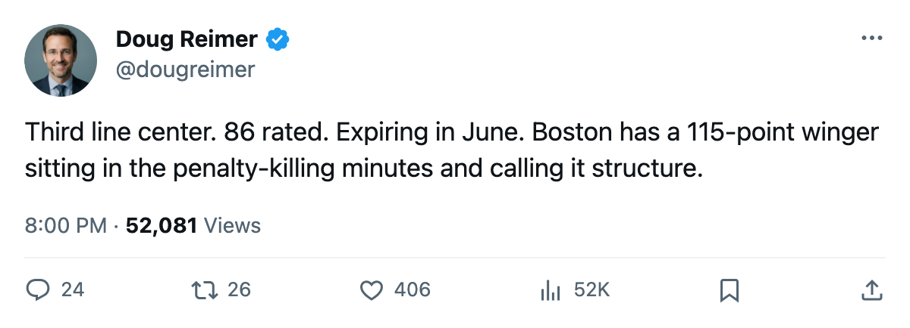

BOS
BOSSamsonov Sits on the Third Line at $1.90M and His Deal Expires in June
Boston's mis-slot audit turned up one player whose rating, contract status, and ice time all point the same direction
 Doug ReimerAnalytics editor, ex-video coach · The Slot Report
Doug ReimerAnalytics editor, ex-video coach · The Slot Report
 Sergei Samsonov86 is rated 86 in the Bureau's Book, carries $1.90M on a contract that expires after this season, and logged 10.0 minutes a night in Boston's first game. His slot: L3C_. Third line, center.
Sergei Samsonov86 is rated 86 in the Bureau's Book, carries $1.90M on a contract that expires after this season, and logged 10.0 minutes a night in Boston's first game. His slot: L3C_. Third line, center.
The mis-slot table on the sheet flags him. An 86-rated left winger sitting behind  Mike Knuble78 (78, first-line left wing) and Ivan Huml76 (76, second-line left wing). The gap between Samsonov and the Boston roster average is 11.2 points. No other Bruin sits that far above his club's mean.
Mike Knuble78 (78, first-line left wing) and Ivan Huml76 (76, second-line left wing). The gap between Samsonov and the Boston roster average is 11.2 points. No other Bruin sits that far above his club's mean.
Last season: 67 games, 46 goals, 69 assists, 115 points, 21.3 minutes a night. This season after 1 game: 0 points, 10.0 minutes. The Bureau's Development Index reads 0, so his form is flat against his base of 89. He is sitting.
The slot gap
The table below lists Boston's top forwards by overall and current slot designation, drawn from the Bureau's roster and the mis-slot audit.
| Player | Overall | Contract years left | Slot | Last season points |
|---|---|---|---|---|
 Joe Thornton90 Joe Thornton90 | 90 | 5 | L1C_ | 90 |
| Sergei Samsonov | 86 | 0 | L3C_ | 115 |
 Glen Murray85 Glen Murray85 | 85 | 3 | L1RW | 87 |
| Mike Knuble | 78 | 3 | L1LW | 50 |
| Ivan Huml | 76 | 1 | L2LW | 32 |
Thornton at 90 and Murray at 85 account for two slots in the top six. The remaining four are split among men rated 78 and below. Samsonov, at 86, is rated 8 points above the highest-rated man occupying a top-six slot besides Thornton and Murray. He plays third-line center instead.
What it costs
Boston's 26-player roster averages $2.14M in salary and 74.8 in overall, according to the desk's query of the contract ledger. Samsonov carries $1.90M, below the team average, for a grade 11.2 points above it.
The 115-point season cost Boston $1.90M. At the team's average salary, a 74.8-rated player earns $2.14M. Boston is paying its most productive winger of last season less than its average player, and putting him on the third line.
Shaone Morrisonn78 is Boston's only player on the Development Index risers list, at +11 (base 70, overall 78). The club's top-rated player, Thornton, sits 4 below his base of 94. The Index tells you Boston has one riser and its two best players in a cold spot. It does not explain why the 86 plays 10 minutes.
The window
The contract expires after this season. Samsonov turns 27 in October 2005. His strongest grades are SPEED 99, SHPW 97, ACCELERATION 95, AGILITY 94. His weakest are FIGH 50 and TOUG 51. He is a speed-and-shot winger playing center on the third line, and he is free in 8 months.
If Boston wants to keep him, the renewal starts from a $1.90M base and a 115-point season, which means the new number will be several multiples of the old one. If Boston does not want to pay, keeping him buried at 10.0 minutes and third-line center minimizes his production before the market can see it. Both are defensible strategies. Only one of them is honest with a man who scored 115 last year.
The desk has no way of knowing which the Bruins are running. The numbers say they are getting 10.0 minutes of a player who should be getting 20.0.
